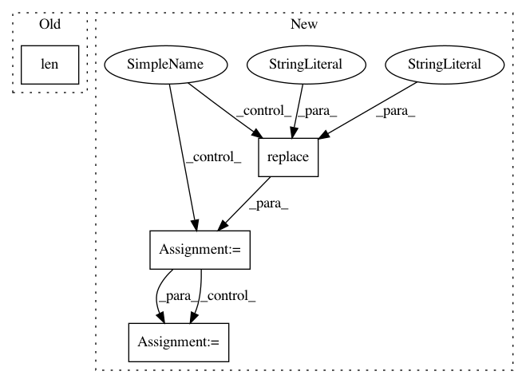

de336139770c6e9e035c0e402375efda48d75301,tensorflow/python/distribute/multi_process_lib.py,,_set_spawn_exe_path,#,89
Before Change
path_to_use = None
guess_path = sys.argv[0][:-3]
guess_path = guess_path.split(os.sep)
for path_reduction in range(-1, -len(guess_path), -1):
possible_path = os.sep.join(guess_path[:path_reduction] +
[guess_path[-1]])
if os.access(possible_path, os.X_OK):
After Change
// and the binary is
// /.../tensorflow/python/distribute/input_lib_test_multiworker_gpu
org_tensorflow_path = sys.argv[0][:sys.argv[0].rfind("/tensorflow")]
binary = os.environ["TEST_TARGET"][2:].replace(":", "/", 1)
possible_path = os.path.join(org_tensorflow_path, binary)
logging.info("Guessed test binary path: %s", possible_path)
if os.access(possible_path, os.X_OK):
path = possible_path
if path is None:
logging.error(
"Cannot determine binary path. sys.argv[0]=%s os.environ=%s",
sys.argv[0], os.environ)
In pattern: SUPERPATTERN
Frequency: 4
Non-data size: 4
Instances
Project Name: tensorflow/tensorflow
Commit Name: de336139770c6e9e035c0e402375efda48d75301
Time: 2020-11-18
Author: crccw@google.com
File Name: tensorflow/python/distribute/multi_process_lib.py
Class Name:
Method Name: _set_spawn_exe_path
Project Name: tensorflow/tensorflow
Commit Name: 448e080c752a1b5f54c422401b41e824b0274a91
Time: 2020-11-17
Author: crccw@google.com
File Name: tensorflow/python/distribute/multi_process_lib.py
Class Name:
Method Name: _set_spawn_exe_path
Project Name: gyoisamurai/GyoiThon
Commit Name: 2fcde9fa889d6b9c52f9c9721943082a27236e87
Time: 2018-11-13
Author: gyoiler3@gmail.com
File Name: modules/Gyoi_ErrorChecker.py
Class Name: ErrorChecker
Method Name: get_error_message
Project Name: gyoisamurai/GyoiThon
Commit Name: b6f335e75cbc1a07d32c914d4629a25cf31cb964
Time: 2018-11-13
Author: gyoiler3@gmail.com
File Name: modules/Gyoi_CommentChecker.py
Class Name: CommentChecker
Method Name: get_bad_comment